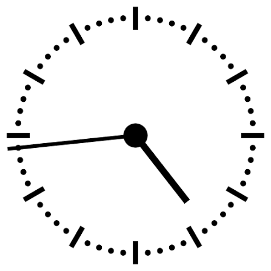

Welcome to our collection of lucky charms and rituals • Welcome to our collection of lucky charms and rituals
• Welcome to our collection of lucky charms and rituals. • Welcome to our collection of lucky charms and rituals
⋆˙⟡ ⋆.˚ ⊹₊⟡ ⋆Charm 11 ⋆˙⟡ ⋆.˚ ⊹₊⟡ ⋆
4:44

Yeji Lee
One weird superstition I have is that I think seeing 4:44 on the clock is bad luck. A lot of people believe that repeating numbers are lucky to have special meaning, but for some reason, I feel the complete opposite about 4:44.
Whenever I randomly check my phone and see 4:44, I get this weird feeling that something bad might happen. I know it’s probably just a coincidence, but I still don’t like seeing it. Sometimes I even try not to look at the clock around that time because I don't want to accidentally see those numbers.
What’s funny is that I don’t really believe in every superstition, but this one somehow stuck with me. I know that looking at a certain number can’t actually change what happens in my life, but I still associate 4:44 with bad luck. I think it’s interesting how something as simple as a number can affect the way we feel.